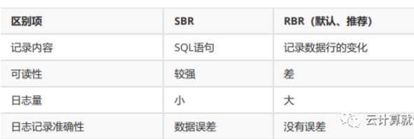

第十节 MySQL 日志管理
1、MySQL错误日志
1-1、错误日志作用
记录MySQL启动及工作过程中，状态、报错、警告。
1-2、设置错误日志
1)修改配置文件，并重启MySQL
配置错误日志
$ vim /etc/my.cnf
log_error=/data/3306/data/mysql.log #这里的路径和文件名称可以随便定义
重启MySQL生效
systemctl restart mysqld
2)查看错误日志
mysql> select @@log_error;
+---------------------------+
| @@log_error |
+---------------------------+
| /data/3306/data/mysql.log |
+---------------------------+
1 row in set (0.00 sec)
注意：查看错误日志关注[ERROR]的上下文.
2、MySQL 二进制日志
2-1、二进制日志作用
数据恢复必备的日志。
主从复制依赖的日志。
2-2、MySQL 二进制日志设置
1)修改配置文件
# vim /etc/my.cnf
server_id=6
log_bin=/data/3306/binlog/mysql-bin
配置说明
server_id是5.7之后开二进制日志必加的参数log_bin= 打开二进制功能/data/3306/binlog/指定存放路径mysql-bin文件名前缀
2)创建目录并授权
# mkdir -p /data/3306/binlog/
# chown -R mysql.mysql /data/3306/*
3)重启数据库
# systemctl restart mysqld
# ll binlog/
total 8
-rw-r----- 1 mysql mysql 768 Aug 14 20:02 mysql-bin.000001
-rw-r----- 1 mysql mysql 35 Aug 14 18:18 mysql-bin.index
配置说明
- mysql-bin 是在配置文件配置的前缀
- 000001 MySQL每次重启，重新生成新的
3、二进制日志内容
除了查询类的语句，都会记录，即所有数据库变更类的语句。
3-1 记录语句的种类
- DDL（数据定义语言）：create、drop
- DCL（数据控制语言）：grant 、revoke
- DML（数据操作语言）：insert、update、delete
3-2 不同语句的记录格式说明
- DDL、DCL直接以语句（statement）方式记录 .
- DML 语句有三种模式：SBR、RBR、MBR
mysql> select @@binlog_format;
+-----------------+
| @@binlog_format |
+-----------------+
| ROW |
+-----------------+
1 row in set (0.00 sec)
配置说明
statement---->SBR：做什么记录什么，即SQL语句row---------->RBR：记录数据行的变化（默认模式，推荐）mixed-------->MBR：自动判断记录模式
SBR和RBR的区别

4、二进制日志工作模式
4-1 二进制日志工作模式
# vim /etc/my.cnf
[mysqld]
binlog_format='ROW'
重启数据库
systemctl restart mysqld
4-2 查看二进制日志工作模式
mysql> show variables like "binlog%";
+--------------------------------------------+--------------+
| Variable_name | Value |
+--------------------------------------------+--------------+
| binlog_cache_size | 32768 |
| binlog_checksum | CRC32 |
| binlog_direct_non_transactional_updates | OFF |
| binlog_error_action | ABORT_SERVER |
| binlog_format | ROW |
| binlog_group_commit_sync_delay | 0 |
| binlog_group_commit_sync_no_delay_count | 0 |
| binlog_gtid_simple_recovery | ON |
| binlog_max_flush_queue_time | 0 |
| binlog_order_commits | ON |
| binlog_row_image | FULL |
| binlog_rows_query_log_events | OFF |
| binlog_stmt_cache_size | 32768 |
| binlog_transaction_dependency_history_size | 25000 |
| binlog_transaction_dependency_tracking | COMMIT_ORDER |
+--------------------------------------------+--------------+
15 rows in set (0.00 sec)
4-3、二进制日志三种模式的区别
1）ROW: 基于行的复制
优点：所有的语句都可以复制，不记录执行的sql语句的上下文相关的信息，仅需要记录那一条记录被 修改成什么了
缺点：binlog 大了很多，复杂的回滚时 binlog 中会包含大量的数据；主服务器上执行update语句时， 所有发生变化的记录都会写到 binlog 中；比如有这样一条update语句：update product set owner_member_id='d' where owner_member_id='a',执行之后，日志中记录的不是这条update语句 所对应的事件(mysql是以事件的形式来记录bin-log日志)，而是这条语句所更新的每一条记录的变化情 况，这样就记录成很多条记录被更新的很多事件。自然，bin-log日志的量会很大。
2）Statement: 基于sql语句的复制
-
优点：不需要记录每一行的变化，减少了binlog日志量，节约了IO，提高性能
-
缺点：由于它是记录的执行语句，所以为了让这些语句在slave端也能正确执行，那么他还必须记录每 条语句在执行的时候的一些相关信息，也就是上下文信息，以保证所有语句在slave端被执行的时候能 够得到和在master端执行时候相同的结果。另外就是,由于mysql现在发展比较快，很多的新功能加入， 使mysql的复制遇到了不小的挑战,自然复制的时候涉及到越复杂的内容，bug也就越容易出现。在 statement level下，目前已经发现的就有不少情况会造成mysql的复制问题，主要是修改数据的时候使 用了某些特定的函数或者功能的时候会出现，比如sleep()在有些版本就不能正确复制。
3）mixed模式 ：row 与 statement 结合
实际上就是前两种模式的结合，在mixed模式下，mysql会根据执行的每一条具体的sql语句来区分对待 记录的日志形式，也就是在statement和row之间选一种。
新版本中的statement level还是和以前一 样，仅仅记录执行的语句。而新版本的mysql中对row level模式被做了优化，并不是所有的修改都会以 row level来记录，像遇到表结构变更的时候就会以statement模式来记录，如果sql语句确实就是 update或者delete 等修改数据的语句，那么还是会记录所有行的变更。
5、二进制日志事件
5-1、二进制日志事件简介
二进制日志内容以事件（binlog events）为最小记录单元。
对于DDL和DCL，一个语句就是一个事件。
对于DML（标准的事务语句），只记录已提交的事务的DML语句
begin ; 事件1
a 事件2
b 事件3
commit; 事件4
5-2、事件的构成（为了截取日志）
mysqlbinlog mysql-bin.000001
# at 219 事件开始的位置(position)
end_log_pos 319 事件结束的位置(position)
#200219 14:28:12 事件发生的时间
create database qfedu 事件内容
5-3、二进制日志的基础查看
1）查看二进制日志的配置信息
mysql> show variables like '%log_bin%';
+---------------------------------+--------------------------------+
| Variable_name | Value |
+---------------------------------+--------------------------------+
| log_bin | ON |
| log_bin_basename | /var/log/mysql/mysql-bin |
| log_bin_index | /var/log/mysql/mysql-bin.index |
| log_bin_trust_function_creators | OFF |
| log_bin_use_v1_row_events | OFF |
| sql_log_bin | ON |
+---------------------------------+--------------------------------+
6 rows in set (0.00 sec)
字段说明
log_bin开启二进制日志的开关log_bin_basename位置sql_log_bin临时开启或关闭二进制日志的小开关
2）查看二进制日志的基本信息
打印出当前MySQL的所有二进制日志，并且显示最后使用到的 position
mysql> show binary logs;
+------------------+-----------+
| Log_name | File_size |
+------------------+-----------+
| mysql-bin.000001 | 316 |
+------------------+-----------+
1 row in set (0.00 sec)
查看当前正在使用的二进制日志
mysql> show binary logs;
+------------------+-----------+
| Log_name | File_size |
+------------------+-----------+
| mysql-bin.000001 | 316 |
+------------------+-----------+
1 row in set (0.00 sec)
mysql> show master status;（常用）
+------------------+----------+--------------+------------------+---------------
----+
| File | Position | Binlog_Do_DB | Binlog_Ignore_DB |
Executed_Gtid_Set |
+------------------+----------+--------------+------------------+---------------
----+
| mysql-bin.000001 | 316 | | |
|
+------------------+----------+--------------+------------------+---------------
----+
1 row in set (0.00 sec)
查看二进制日志的事件信息
mysql> show master status;
+------------------+----------+--------------+------------------+---------------
----+
| File | Position | Binlog_Do_DB | Binlog_Ignore_DB |
Executed_Gtid_Set |
+------------------+----------+--------------+------------------+---------------
----+
| mysql-bin.000001 | 316 | | |
|
+------------------+----------+--------------+------------------+---------------
----+
1 row in set (0.00 sec)
mysql> show binlog events in 'mysql-bin.000001';
+------------------+-----+----------------+-----------+-------------+-----------
----------------------------+
| Log_name | Pos | Event_type | Server_id | End_log_pos | Info
|
+------------------+-----+----------------+-----------+-------------+-----------
----------------------------+
| mysql-bin.000001 | 4 | Format_desc | 6 | 123 | Server
ver: 5.7.29-log, Binlog ver: 4 |
| mysql-bin.000001 | 123 | Previous_gtids | 6 | 154 |
|
| mysql-bin.000001 | 154 | Anonymous_Gtid | 6 | 219 | SET
@@SESSION.GTID_NEXT= 'ANONYMOUS' |
| mysql-bin.000001 | 219 | Query | 6 | 316 | create
database qfedu |
+------------------+-----+----------------+-----------+-------------+-----------
----------------------------+
4 rows in set (0.00 sec)
5-4、二进制日志内容的查看和截取
1)内容查看命令
# mysqlbinlog /data/3306/binlog/mysql-bin.000001
# mysqlbinlog --base64-output=decode-rows -vvv
/data/3306/binlog/mysql-bin.000001
记不住参数可以去mysqlbinlog --help中查看
2)日志的截取
截取语法:
--start-position开始截取 pod 点--stop-position结束截取 pod 点
# mysqlbinlog --start-position=xxx --stop-position=xxx
/data/3306/binlog/mysql-bin.000001 >/data/bin.sql
3)数据恢复实例
mysql> create database binlog charset utf8mb4;
Query OK, 1 row affected (0.00 sec)
mysql> use binlog;
Database changed
mysql> create table t1(id int) engine=innodb charset=utf8mb4;
Query OK, 0 rows affected (0.02 sec)
mysql> insert into t1 values(1),(2),(3);
Query OK, 3 rows affected (0.00 sec)
Records: 3 Duplicates: 0 Warnings: 0
mysql> insert into t1 values(11),(12),(13);
Query OK, 3 rows affected (0.00 sec)
Records: 3 Duplicates: 0 Warnings: 0
mysql> commit;
Query OK, 0 rows affected (0.01 sec)
mysql> update t1 set id=10 where id>10;
Query OK, 3 rows affected (0.00 sec)
Rows matched: 3 Changed: 3 Warnings: 0
mysql> commit;
mysql> select * from t1;
+------+
| id |
+------+
| 1 |
| 2 |
| 3 |
| 10 |
| 10 |
| 10 |
+------+
6 rows in set (0.00 sec)
删除数据
mysql> drop database binlog;
Query OK, 1 row affected (0.00 sec)
数据恢复
确认起点和终点
mysql> show master status;
+------------------+----------+--------------+------------------+---------------
----+
| File | Position | Binlog_Do_DB | Binlog_Ignore_DB |
Executed_Gtid_Set |
+------------------+----------+--------------+------------------+---------------
----+
| mysql-bin.000001 | 1610 | | |
|
+------------------+----------+--------------+------------------+---------------
----+
1 row in set (0.00 sec)
mysql> show binlog events in 'mysql-bin.000001';
起点：
| mysql-bin.000001 | 381 | Query | 6 | 497 | create
database binlog charset utf8mb4 |
终点：
| mysql-bin.000001 | 1575 | Query | 6 | 1673 | drop
database binlog
截取日志
# mysqlbinlog --start-position=381 --stop-position=1575
/data/3306/binlog/mysql-bin.000003>/data/bin.sql
恢复日志
mysql> set sql_log_bin=0; # 临时关闭当前会话的binlog记录
mysql> source /data/bin.sql;
mysql> set sql_log_bin=1; # 打开当前会话的binlog
5-5、基于 gtid
1)gtid（Global Transaction ID）简介
- 全局唯一的事务编号。
- 幂等性。
- GtID包括两部分：
Server_uuid：Tx_id
2)gtid 配置
查看 gtid
mysql> show variables like '%gtid%';
+----------------------------------+-----------+
| Variable_name | Value |
+----------------------------------+-----------+
| binlog_gtid_simple_recovery | ON |
| enforce_gtid_consistency | OFF |
| gtid_executed_compression_period | 1000 |
| gtid_mode | OFF |
| gtid_next | AUTOMATIC |
| gtid_owned | |
| gtid_purged | |
| session_track_gtids | OFF |
+----------------------------------+-----------+
8 rows in set (0.00 sec)
修改配置
[root@qfedu.com ~]# vim /etc/my.cnf
[mysqld]
gtid_mode=on # 开启 gtid
enforce_gtid_consistency=true # 强制GTID一致性
log_slave_updates=1 # 主从复制中从库记录 binlog，并统一GTID信息
gtid_mode=on# 开启 gtidenforce_gtid_consistency=true# 强制GTID一致性log_slave_updates=1# 主从复制中从库记录 binlog，并统一GTID信息
重启数据库
[root@qfedu.com ~]# systemcat restart mysqld
3)基于 gtid 截取日志
- 对于 DDL和 DCL 一个操作就是一个 GTID。
- 对于 DML，一个完整的事务就是已给 GTID。
mysql> show variables like '%gtid%';
+----------------------------------+-----------+
| Variable_name | Value |
+----------------------------------+-----------+
| binlog_gtid_simple_recovery | ON |
| enforce_gtid_consistency | ON |
| gtid_executed_compression_period | 1000 |
| gtid_mode | ON |
| gtid_next | AUTOMATIC |
| gtid_owned | |
| gtid_purged | |
| session_track_gtids | OFF |
+----------------------------------+-----------+
8 rows in set (0.00 sec)
mysql> show master status;
+------------------+----------+--------------+------------------+---------------
---------------------------+
| File | Position | Binlog_Do_DB | Binlog_Ignore_DB |
Executed_Gtid_Set
+------------------+----------+--------------+------------------+---------------
---------------------------+
| mysql-bin.000002 | 1359 | | | 827ddb16-4ec8-
11ea-b734-000c293df1f0:1-5 |
+------------------+----------+--------------+------------------+---------------
---------------------------+
1 row in set (0.00 sec)
mysql> show binlog events in 'mysql-bin.000002';
+------------------+------+----------------+-----------+-------------+----------
------------------------------------------------------------+
| Log_name | Pos | Event_type | Server_id | End_log_pos | Info
|
+------------------+------+----------------+-----------+-------------+----------
------------------------------------------------------------+
| mysql-bin.000002 | 4 | Format_desc | 6 | 123 | Server
ver: 5.7.29-log, Binlog ver: 4 |
| mysql-bin.000002 | 123 | Previous_gtids | 6 | 154 |
|
| mysql-bin.000002 | 154 | Gtid | 6 | 219 | SET
@@SESSION.GTID_NEXT= '827ddb16-4ec8-11ea-b734-000c293df1f0:1' |
| mysql-bin.000002 | 219 | Query | 6 | 338 | create
database binlog1 charset utf8mb4 |
| mysql-bin.000002 | 338 | Gtid | 6 | 403 | SET
@@SESSION.GTID_NEXT= '827ddb16-4ec8-11ea-b734-000c293df1f0:2' |
| mysql-bin.000002 | 403 | Query | 6 | 536 | use
`binlog1`; create table t1(id int) engine=innodb charset=utf8mb4 |
| mysql-bin.000002 | 536 | Gtid | 6 | 601 | SET
@@SESSION.GTID_NEXT= '827ddb16-4ec8-11ea-b734-000c293df1f0:3' |
| mysql-bin.000002 | 601 | Query | 6 | 676 | BEGIN
|
| mysql-bin.000002 | 676 | Table_map | 6 | 724 | table_id:
108 (binlog1.t1) |
| mysql-bin.000002 | 724 | Write_rows | 6 | 774 | table_id:
108 flags: STMT_END_F |
| mysql-bin.000002 | 774 | Xid | 6 | 805 | COMMIT /*
xid=11 */ |
| mysql-bin.000002 | 805 | Gtid | 6 | 870 | SET
@@SESSION.GTID_NEXT= '827ddb16-4ec8-11ea-b734-000c293df1f0:4' |
| mysql-bin.000002 | 870 | Query | 6 | 945 | BEGIN
|
| mysql-bin.000002 | 945 | Table_map | 6 | 993 | table_id:
108 (binlog1.t1) |
| mysql-bin.000002 | 993 | Write_rows | 6 | 1043 | table_id:
108 flags: STMT_END_F |
| mysql-bin.000002 | 1043 | Xid | 6 | 1074 | COMMIT /*
xid=12 */ |
| mysql-bin.000002 | 1074 | Gtid | 6 | 1139 | SET
@@SESSION.GTID_NEXT= '827ddb16-4ec8-11ea-b734-000c293df1f0:5' |
| mysql-bin.000002 | 1139 | Query | 6 | 1214 | BEGIN
|
| mysql-bin.000002 | 1214 | Table_map | 6 | 1262 | table_id:
108 (binlog1.t1) |
| mysql-bin.000002 | 1262 | Update_rows | 6 | 1328 | table_id:
108 flags: STMT_END_F |
| mysql-bin.000002 | 1328 | Xid | 6 | 1359 | COMMIT /*
xid=15 */ |
| mysql-bin.000002 | 1359 | Gtid | 6 | 1424 | SET
@@SESSION.GTID_NEXT= '827ddb16-4ec8-11ea-b734-000c293df1f0:6' |
+------------------+------+----------------+-----------+-------------+----------
------------------------------------------------------------+
37 rows in set (0.00 sec)
4) 基于 gtid 截取日志
--include-gtids=包含--exclude-gtids=排除--skip-gtids=跳过
截取1-3号事务
# mysqlbinlog --include-gtids=' 827ddb16-4ec8-11ea-b734-
000c293df1f0:1-3' /data/binlog/mysql-bin.000001>/data/gtid.sql
截取 1-10 gtid事务,跳过6号和8号事务
# mysqlbinlog --include-gtids=' 827ddb16-4ec8-11ea-b734-
000c293df1f0:1-10 --exclude-gtids='545fd699-be48-11e9-8f0a000c2980e248:6,545fd699-be48-11e9-8f0a-000c2980e248:8' /data/binlog/mysqlbin.000001>/data/gtid.sql
5)gtid 截取日志实例
准备环境
mysql> create database gtid charset utf8mb4;
Query OK, 1 row affected (0.00 sec)
mysql> use gtid;
Database changed
mysql> create table t1(id int) engine=innodb charset=utf8mb4;
Query OK, 0 rows affected (0.02 sec)
mysql> insert into t1 values(1),(2),(3);
Query OK, 3 rows affected (0.06 sec)
Records: 3 Duplicates: 0 Warnings: 0
mysql> commit;
Query OK, 0 rows affected (0.00 sec)
mysql> insert into t1 values(11),(12),(13);
Query OK, 3 rows affected (0.00 sec)
Records: 3 Duplicates: 0 Warnings: 0
mysql> commit;
Query OK, 0 rows affected (0.00 sec)
mysql> select * from t1;
+------+
| id |
+------+
| 1 |
| 2 |
| 3 |
| 11 |
| 12 |
| 13 |
+------+
6 rows in set (0.00 sec)
删除数据
mysql> drop database gtid;
Query OK, 1 row affected (0.01 sec)
mysql> show databases;
+--------------------+
| Database |
+--------------------+
| information_schema |
| mysql |
| performance_schema |
| sys |
| test |
+--------------------+
6 rows in set (0.00 sec)
找起点和终端(gtid)
mysql> show master status;
+------------------+----------+--------------+------------------+---------------
----------------------------+
| File | Position | Binlog_Do_DB | Binlog_Ignore_DB |
Executed_Gtid_Set |
+------------------+----------+--------------+------------------+---------------
----------------------------+
| mysql-bin.000002 | 2409 | | | 827ddb16-4ec8-
11ea-b734-000c293df1f0:1-10 |
+------------------+----------+--------------+------------------+---------------
----------------------------+
1 row in set (0.00 sec)
mysql> show binlog events in 'mysql-bin.000002';
| mysql-bin.000002 | 1359 | Gtid | 6 | 1424 | SET
@@SESSION.GTID_NEXT= '827ddb16-4ec8-11ea-b734-000c293df1f0:6' |
| mysql-bin.000002 | 1424 | Query | 6 | 1534 | create
database gtid charset utf8mb4 |
| mysql-bin.000002 | 2252 | Gtid | 6 | 2317 | SET
@@SESSION.GTID_NEXT= '827ddb16-4ec8-11ea-b734-000c293df1f0:10' |
| mysql-bin.000002 | 2317 | Query | 6 | 2409 | drop
database gtid
截取日志（仅供参考）
# mysqlbinlog --skip-gtids --include-gtids='827ddb16-4ec8-
11ea-b734-000c293df1f0:6-9' /data/3306/binlog/mysql-bin.000002 > /data/gtid.sql
恢复数据
mysql> set sql_log_bin=0;
Query OK, 0 rows affected (0.00 sec)
mysql> source /data/gtid.sql
mysql> set sql_log_bin=1;
mysql> show databases;
+--------------------+
| Database |
+--------------------+
| information_schema |
| gtid |
| mysql |
| performance_schema |
| sys |
| test |
+--------------------+
6 rows in set (0.00 sec)
6、二进制日志其他操作
6-1 自动清理日志
查看自动清理周期
mysql> show variables like '%expire%';
+--------------------------------+-------+
| Variable_name | Value |
+--------------------------------+-------+
| disconnect_on_expired_password | ON |
| expire_logs_days | 0 |
+--------------------------------+-------+
2 rows in set (0.00 sec)
零时设置自动清理周期
mysql> set global expire_logs_days=8;
mysql> show variables like '%expire%';
+--------------------------------+-------+
| Variable_name | Value |
+--------------------------------+-------+
| disconnect_on_expired_password | ON |
| expire_logs_days | 8 |
+--------------------------------+-------+
2 rows in set (0.00 sec)
永久生效
- 修改配置文件
# vim /etc/my.cnf
[mysqld]
expire_logs_days=15;
企业建议,至少保留两个全备周期+1的binlog
重启数据库
systemcat restart mysqld
6-2 手工清理
PURGE BINARY LOGS BEFORE now() - INTERVAL 3 day;
PURGE BINARY LOGS TO 'mysql-bin.000009';
注意: 不要手工 rm binlog文件
主从关系中，主库执行此操作 reset master; ，主从环境必崩
6-3 二进制日志的滚动
mysql> flush logs;
mysql> select @@max_binlog_size;
7、慢日志简介
记录运行较慢的语句记录slowlog中。
功能是辅助优化的工具日志。
应激性的慢可以通过show processlist进行监控
一段时间的慢可以进行slow记录、统计
8、慢日志配置
8-1 查看慢日志
查看是否开启
mysql> show variables like '%slow_query%';
+---------------------+-----------------------------------+
| Variable_name | Value |
+---------------------+-----------------------------------+
| slow_query_log | OFF |
| slow_query_log_file | /var/lib/mysql/localhost-slow.log |
+---------------------+-----------------------------------+
2 rows in set (0.00 sec)
重连或新开一个会话才能看到修改值
查看阈值
mysql> select @@long_query_time;
+-------------------+
| @@long_query_time |
+-------------------+
| 10.000000 |
+-------------------+
1 row in set (0.00 sec)
mysql> SHOW GLOBAL VARIABLES LIKE 'long_query_time%';
+-----------------+-----------+
| Variable_name | Value |
+-----------------+-----------+
| long_query_time | 10.000000 |
+-----------------+-----------+
1 row in set (0.00 sec)
mysql> SHOW VARIABLES LIKE 'long_query_time%';
+-----------------+-----------+
| Variable_name | Value |
+-----------------+-----------+
| long_query_time | 10.000000 |
+-----------------+-----------+
1 row in set (0.00 sec)
mysql> show variables like '%log_queries_not_using_indexes%';
+-------------------------------+-------+
| Variable_name | Value |
+-------------------------------+-------+
| log_queries_not_using_indexes | OFF |
+-------------------------------+-------+
1 row in set (0.00 sec)
8-2 配置慢日志
零时设置开启
SET GLOBAL slow_query_log = 1; #默认未开启，开启会影响性能，mysql重启会失效
设置阈值：
SET GLOBAL long_query_time=3;
8-3 永久生效
修改配置文件
# vim /etc/my.cnf
[mysqld]
slow_query_log=1
slow_query_log_file=/data/3306/data/qfedu-slow.log
long_query_time=0.1 默认配置10秒钟
log_queries_not_using_indexes=1
systemcat restart mysqld
9、慢语句模拟
mysql> set sql_log_bin=0;
Query OK, 0 rows affected (0.00 sec)
mysql> select sleep(4);
+----------+
| sleep(4) |
+----------+
| 0 |
+----------+
1 row in set (4.00 sec)
mysql> SHOW GLOBAL STATUS LIKE '%Slow_queries%';
+---------------+-------+
| Variable_name | Value |
+---------------+-------+
| Slow_queries | 1 |
+---------------+-------+
1 row in set (0.00 sec)
mysql> set sql_log_bin=1;
Query OK, 0 rows affected (0.00 sec)
10、慢日志分析工具
# mysqldumpslow -s r -t 10 /data/3306/data/qfedu-slow.log
# 得到返回记录集最多的10个SQL
# mysqldumpslow -s c -t 10 /data/3306/data/qfedu-slow.log
# 得到访问次数最多的10个SQL
# mysqldumpslow -s t -t 10 -g "LEFT JOIN"
/data/3306/data/qfedu-slow.log # 得到按照时间排序的前10条里面含有左连接的查询语句
# mysqldumpslow -s r -t 10 /data/3306/data/qfedu-slow.log |
more # 结合| more使用，防止爆屏情况
s：表示按何种方式排序
c：访问次数
l：锁定时间
r：返回记录
t：查询时间
al：平均锁定时间
ar：平均返回记录数
at：平均查询时间
t：返回前面多少条的数据
g：后边搭配一个正则匹配模式，大小写不敏感